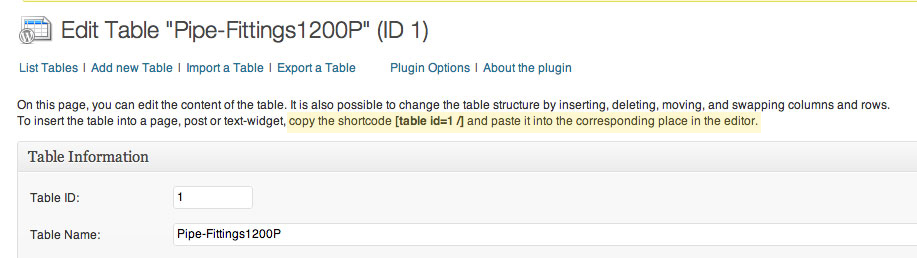
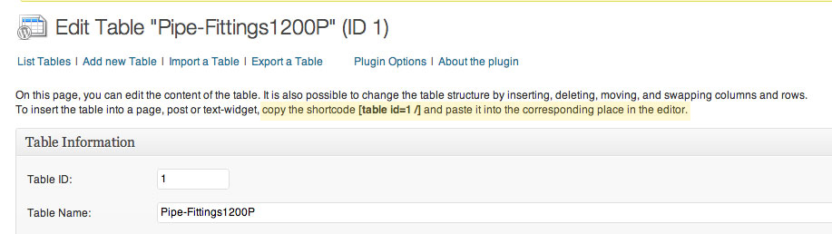

Taking the Intimidation Out of
WordPress Plugin Development
WordPress Plugin Development
Before you begin:
Always check to make sure you're running the most recent version of WordPress.
Search WordPress.org and Google to make sure someone has not already solved your problem.
Let's Get Started!
Naming Your Plugin
The main plugin file needs to be a .php file with a unique file or folder name.
Make it descriptive!
Your plugin will conflict with others if it does not have a unique name.Identifying Header
Tells WordPress that this file is a plugin.Needs to be the first code (er, comment) in your PHP file.
/* Plugin Name: Test Plugin
Version: 1.0
Description: Just a test plugin!
Author: Dan Rabb
Author URI: http://URI_of_plugin_author_website
Plugin URI: http://URI_of_plugin_descripion_and_updates
License: A slug describing license associated with the plugin (usually GPL2) */
Check the requirements of the plugin.
Verify that WordPress is up to snuff, and (if applicable) all dependent plugins are installed.What else do you need?
Action Hooks!
add-action ('hook-name', 'function-name', X,Y);
Allows developers to "hook in" and add stuff to the start or finish loading of WordPress
Triggered by specific events when loading a WordPress site
add-action('hook-name', 'function-name', X,Y);
hook-name: name of the hook you want to add the action to
add-action('hook-name', 'function-name', X,Y);
function-name: name of the function you want WordPress to call
Real world example of setting an action hook:
add_action('wp_footer', 'min_quantity_javascript');
function min_quantity_javascript() {
/* echo out some javascript ... */
}
Pro-tip: if your plugin requires javascript, make sure you add an action hook for wp_footer
Filter Hooks!
add-filter('hook-name', 'function-name', X,Y);
Functions that WordPress passes data through - use these to manipulate text and output
the_title(), the_content(), the_excerpt() are all commonly used filter hooks
Filters work the same as actions - setup code is the same
<Page load life-cycle
put page load life cycle shot hereDesigning
UX Workflow
How should this plugin work ideally for the end user?
Make it as intuitive as possible
Include step by step instructions on how to setup and change the settings

Make it easy to use
Spell out short codes and where users should place them


Streamline data input fields and add visual cues

Clearly label everything that the user has to fill out
How will it integrate into various designs and situations?
Think about how the plugin may be used on the page and how much control you want to give the user